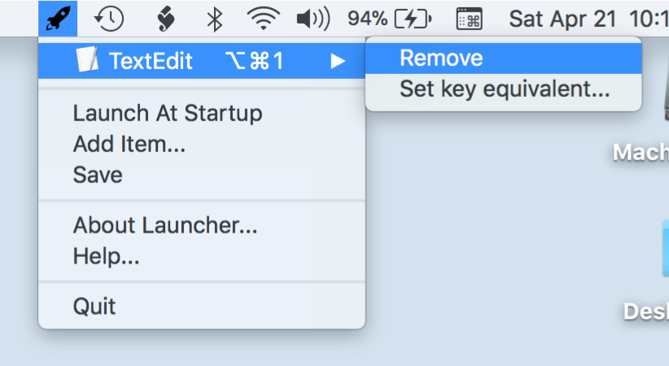
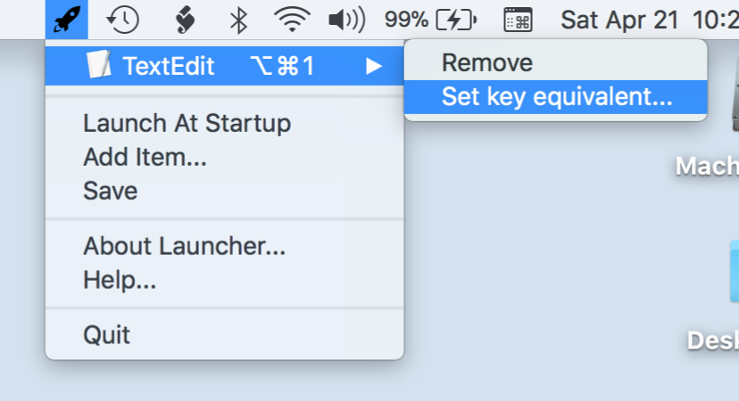

How to use Launcher?
The missing tool Apple didn't provide.
Add an Item
Adding and setting a global hotkey
Removing an Item
Removing unwanted items. Removing a global hotkey.
How Launcher works?
The specifics and tips for special cases.
Troubleshooting
What may go wrong and how to avoid issues.
Launcher Help
Removing an item is easy too. Just select Remove from the submenu. When done, you will have effectively removed the item from Launcher.
To make permanent and immediate you can click Save to store the changes.
Removing a global hotkey is easy once you know the secret. Go to the submenu of the menuitem and select Set key equivalent...


Click on the Circle X button. This will remove the global hotkey.

Click OK to accept the changes.